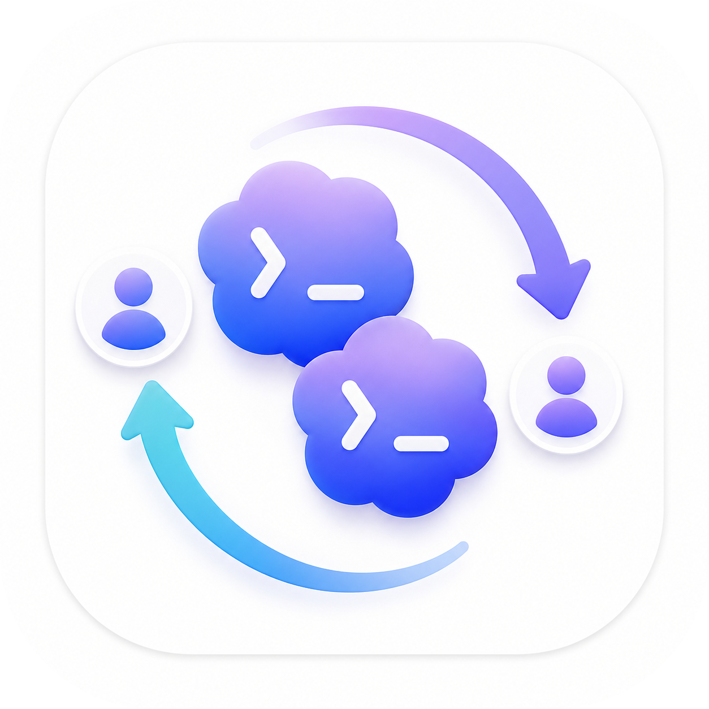

账号切换
保存本机已授权 Profile，支持登录、切换、重命名、删除、拖拽排序和当前账号状态展示。

Codex SwitchLocal Codex Account Control
管理本机已授权的 Codex Profile，查看当前账号额度，切换账号，统计本地会话用量，并通过签名更新保持版本同步。


Features
保存本机已授权 Profile，支持登录、切换、重命名、删除、拖拽排序和当前账号状态展示。
展示 5 小时额度和周额度，支持刷新、展开详情、状态栏快速查看和低额度提醒。
读取本地 Codex 会话记录，统计 token 消耗、趋势图、成本估算和指定日期范围。
浏览本地历史会话，查看消息内容，复制 resume 命令，快速恢复上下文。
管理 Codex Skills 和可复用提示词，界面支持中英文切换。该功能仍在持续完善。
发布包包含 Tauri updater 签名和 manifest，软件内可检查、下载、验证、安装并重启。
Download
适用于 Apple Silicon Mac。不提供 macOS x64 版本。
curl -L -o ~/Downloads/codex_switch_1.1.5_aarch64.dmg https://github.com/ChArLiEdance/codex-switch/releases/download/v1.1.5/codex_switch_1.1.5_aarch64.dmg
适用于 Windows x64，使用 Tauri NSIS 安装器。
Invoke-WebRequest -Uri "https://github.com/ChArLiEdance/codex-switch/releases/download/v1.1.5/codex_switch_1.1.5_x64-setup.exe" -OutFile "$env:USERPROFILE\Downloads\codex_switch_1.1.5_x64-setup.exe"
Design System
白色优先、信息密度适中、边缘使用 hairline shadow、避免蓝紫渐变和装饰性大色块。
卡片 18px 圆角，按钮 12px 圆角，正文 16px，标题不使用负字距，交互状态清晰但克制。
官网直接指向 GitHub、Release、安装包和 README，后续发布时通过版本同步脚本保持链接一致。